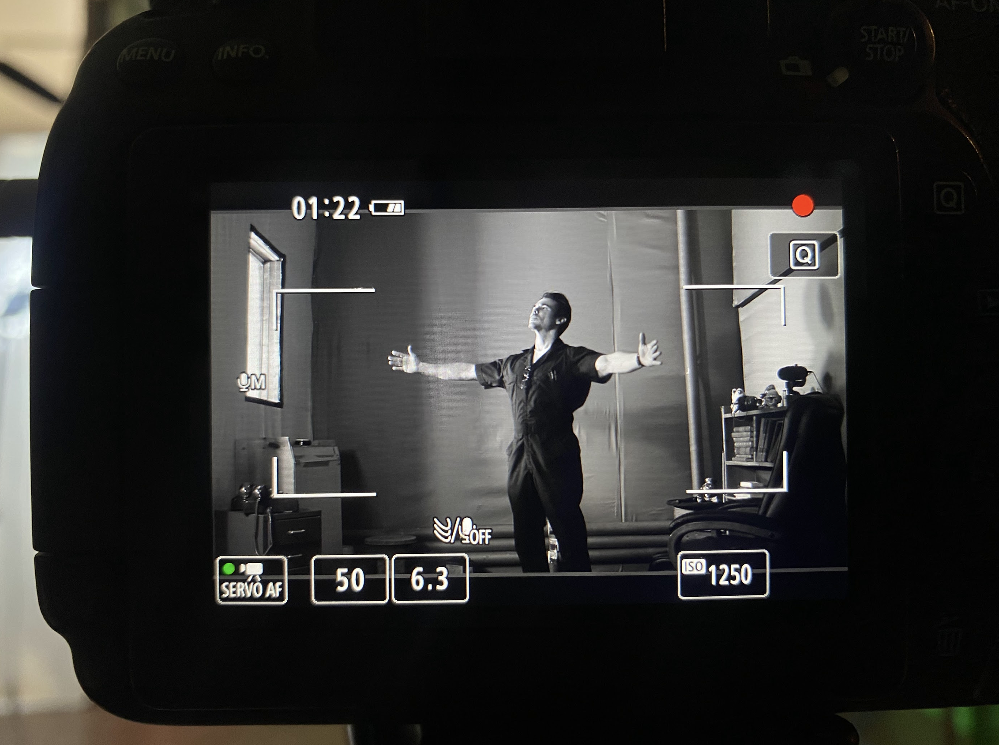
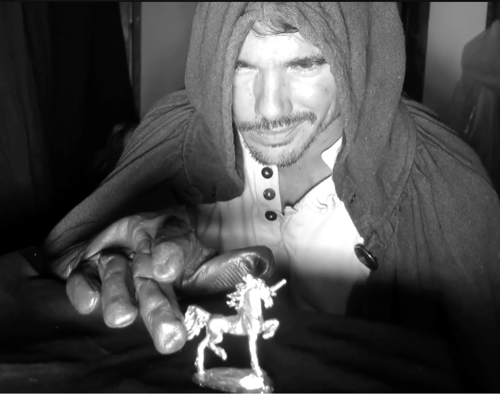
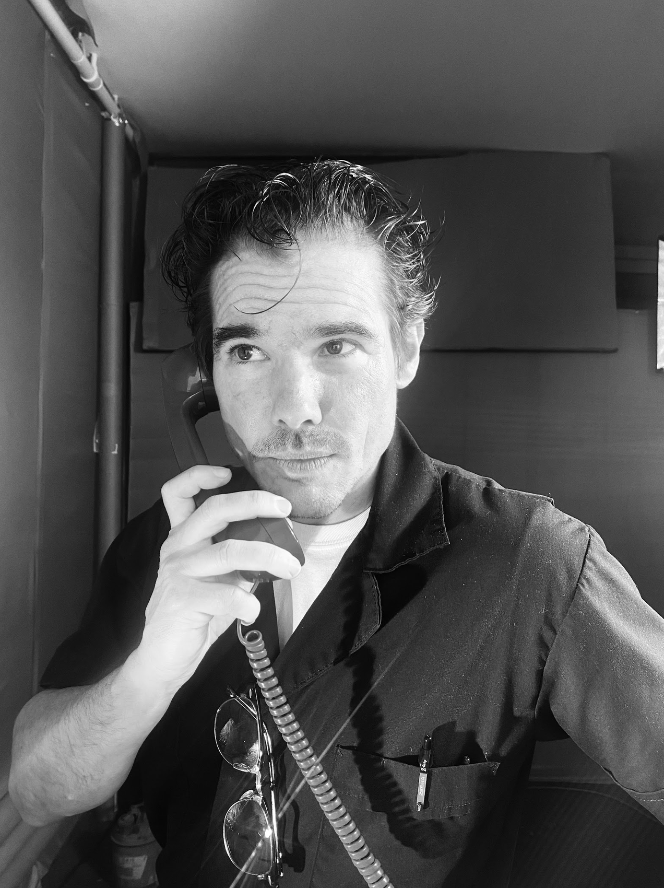

A Sit Down With FHBP Lead Extra
November 24, 2026

SD: And what about the quality.
A: …no answer…
SH: …audible laugh…
SD: Do you consider yourself an actor or a director.
A: A writer.
SD: A triple threat. Have you written a lot of screenplays, novels, poems.
A: We do more improvisation.
SD: Then you write that down.
A: We film it.
SD: Film the script.
A: I'm in a band too.
SH: Is Nuggy jealous of Baby being on its way to Cannes since you left.
SD: You could read about it, but Shane demanded the article be retracted.
A: Congratulations?
The Cannes article has been retracted (see Vol. 1 No. 12). The Cannes trip, per the retracted article, took place. Shane is both the party to the retraction and its source.

SD: Since your style is to jump ship, what's the next production company once you abandon this one.
A: I may work with Da—
SH: —I'm on my way to Cannes via the M. Group.
A: As I was saying, I may work with—
SH: —the M. Group's edit is going to be special.
SD: Shane. You are dismissed from thiss three-way.
SH: I am not leaving the three-way.
Shane and Andrew then went off the record arguing. This magazine will not reconstruct it nor speculate.
SD: Message to Shane, in five words? Shane, don't speak.
SH: You're fired.
A: I will see you on set. I think there is always going to be a place for me at Fat Happy Baby.
SH: No.
SD: Last question. Would you join our mailing list.
A: …no answer…
SH: We have a mailing list?
SD: Yes, for three years. Andrew, can I get a definitive yes?
A: …no answer…
— SD
Andrew Aberth was the lead actor on many Fat Happy Baby Productions films (Unicorn, Rubber, Junk) until he was permenantly relegated to background extra after failing to take the company to finals MULTIPLE TIMES. In a rebellion, he co-founded Chicky Nuggy Productions, a horror team with professionals from TV and film and a makeup artist on staff. He and FHBP Creator Shane Campbell have known each other since eighth grade. Sean Dog also knew both in eighth grade but was in a cooler group so never spoke to them. He gracially allowed for a one-on-one phone interview with FHBP, the very team he left for dead. The interview was to be about his recent release Meet Your Maker, but ten minutes in Shane joined.
SD: Chicky Nuggy Productions. Pitch it in one line.
A: Co-team. Horror. Something that scares. Hard to look at. All lubrication, no friction.
SD: What is it like to sell out.
A: FHBP makes family-films. It was time to grow up, run with adults.
Fat Happy Baby Productions has released a witch-cult film, a vampire film, and a pointable rubber-head piece. The term "family-friendly" is Andrew's.
SD: What is Chicky Nuggy doing differently.
A: We have adults in our movies.
SD: "Adults," but you are an adult and you left.
A: Different business model.
SD: And Nuggy has professionals from TV and film?
A: …answered with a bunch of name-dropping not worth recording…
SD: Your first Chicky Nuggy film, Maker, didn't make the finals, were you snubbed?
A: Team members missed a step. Lots of time waisted.
SD: You created the group, do you take any accountability.
A: There was tension for the entire crew.
SD: So no. Let's move on.
At this point Shane Campbell, Andrew's old director and boss and the founder of Fat Happy Baby Productions, jumped into the call. Nobody had invited him. Even if Andrew later claimed it was a staged, gotch moment.
SH: Look who wants back in the game. And we have professionals on our team too, and a makeup artist. And adults.
SD: Shane this is a one-on-one, please leave.
SH: And what is it like to go from mediocre actor to mediocre director.
A: Haha. That is funny.
SH: Not a joke.
A: …
SD: I appologize for the interuption, Andrew. Let's continue. You did a lot of weight-lifting in preperation for Nuggy's first release. Were you sad you put in so much work and the movie failed to get past Group B.
A: The groups don't—
SH: Fat Happy Baby made it deep into Group A, Andrew… DEEP GROUP A.
SD: Let's move on.
A: There was an important push-up scene. It got cut out.
SH: No ass shot. Your OnlyFans have been waiting patiently.
SD: And we hear you have already made a second film.
A: A short comedy. That's all I can say until we release.

SD: Wow that's fast. Walk me through the Chicky Nuggy production model.
A: Write Sunday morning. Film Sunday morning. Like a 48, only it's 8. All one day. No pre-loaded ideas. A lot of improvising. Editing after.